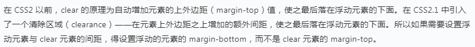

Web前端之旅之盒模型/定位/浮动/flex/grid~_~
盒模型
盒模型（box model）概念：每个元素都被描绘成矩形盒子，这些矩形盒子通过一个模型来描述其占用空间。
一个元素是由四部分组成的：margin、border、padding、content，分别是外边距、边框、内边距、内容区，其中content不是由属性构成的，而是由我们写的东西和width、height属性构成。
IE盒子模型和标准盒子模型都是由四个部分组成的：margin,border,padding,content这四个部分！！！ 不同的是在标准盒子模型中content是一个独立的部分不包含 其他部分！！但是在IE盒子模型中content包含了border,padding,是一个总体的概念！！
标准盒子模型 ＝ margin + border + padding + content （content = width | height）
IE盒子模型 ＝ margin + content （content= border + padding + width | height）
margin和padding是复合属性，有四个值组成：分别为上、右、左、下，4种写法
1.4个值：如margin: 10px 20px 30px 50px;分别按照上右下左的顺时针顺序来设置四个外边距的大小。
2.3个值：如margin: 10px 20px 50px;分别按照上、左右、下的顺序来设置四个外边距的大小，中间的那个属性值设置的是左右的外边距。
3.2个值：如margin: 10px 20px;分别按照上下（分别为10px）、左右（分别为20px）的顺序来设置四个外边距的大小。
4.1个值：如margin: 10px;四个方向都是这个值。
注：body元素有一个默认8px的margin，p标签默认的也有一些margin！去掉这些默认样式可以使用通配符选择器来初始化样式~~~
盒模型计算
现在一个盒子有10px的margin、5px的border、10px 20px 30px 40px的padding和100px的content，那么这个盒子的宽高分别是多少呢？
宽度的计算是：5px的border+40px的padding-left+100px的content+20px的padding-right+5px的border=170px；
高度的计算是： 5px的border+10px的padding-top+100px的content+30px的padding-bottom+5px的border=150px；
视觉格式化模型
默认情况下，盒子按照元素在 HTML 中的先后位置从左至右自上而下一个接着一个排列摆放。
格式上下文（formatting context）：
不同的盒子使用的是不同的格式化上下文（formatting context）来布局，每个格式化上下文都拥有一套不同的渲染规则，它决定了其子元素将如何定位，以及和其他元素的关系和相互作用。
BFC
块级盒（block-level boxes）
当元素的 CSS 属性 display 的计算值为 block，list-item，table，flex 或 grid 时，它是块级元素。视觉上呈现为块，竖直排列。每个块级元素至少生成一个块级盒，称为主要块级 盒(principal block-level box)。一些元素，比如<li>，生成额外的盒来放置项目符号，不过多数元素只生成一个主要块级盒。块级盒参与 BFC，被渲染为完整的一个新行。
渲染规则
默认根元素（html 元素）会创建一个 BFC，其块级盒子元素将会按照如下规则进行渲染
* 块级盒会在垂直方向，一个接一个地放置，每个盒子水平占满整个容器空间
* 块级盒的垂直方向距离由上下 margin 决定，同属于一个 BFC 中的两个或以上块级盒的相接的 margin 会发生重叠（ 如都为正值，则取最大值；如一正一负，则取相加后的值；如都为负，则 取绝对值大的那个。）；不同BFC，垂直方向margin不合并
* BFC 就是页面上的一个隔离的独立容器，容器里面的子元素不会影响到外面的元素。反之也如此
* 计算 BFC 的高度时，浮动元素也参与计算
IFC
行内级盒（inline-level boxes）
当元素的 CSS 属性 display 的计算值为 inline，inline-block，inline-table，inline-flex 或 inline-grid 时，它是行内级元素。视觉上它将内容与其它行内级元素排列为一行，直到该 行被占满然后换行。行内级盒分为行内盒（inline boxes）和原子行内级盒(atomic inline-level boxes)。前者由非置换元素且 display 值为 inline 的元素生成；后者由行内级置换元素，或 display 值为 inline-block, inline-table, inline-flex, inline-grid 的元素生成。（典型的可替换元素有 <img>、<object>、<video> 和表单元素，如<textarea>、<input>）
渲染规则
当块容器盒（block container box）不包括任何块级盒（block-level boxes）时，就会创建一个行内格式化上下文（IFC）（一般来说一个块级盒也是一个块容器盒）IFC 中的行内级盒将会按照如下规则进行 渲染（规则有点多，大概主要点就是行盒，折行机制，水平对齐方式，垂直高度及垂直对齐方式）：
* 盒子一个接一个地水平摆放，当容器宽度不够时就会换行
* 在水平方向上，这些盒的外边距、边框、内边距所占用的空间都会被计算，但行内盒的垂直的border，padding 与 margin 都不会撑开行盒的高度
* 在垂直方向上，这些盒可能会以不同形式来对齐，可通过 vertical-align 来设置，默认对齐为 baseline
* 每一行将生成一个行盒（line box），包括该行所有的盒子，行盒的宽度是由包含块和存在的浮动来决定
* 行盒一般左右边都贴紧其包含块，但是会因为浮动盒（float 元素）的存在而发生变化。浮动盒会位于包含块边缘与行盒边缘之间，这样行盒的可用宽度就小于包含块的宽度
* 当所有盒的总宽度小于行盒的宽度，那么行盒中的水平方向排版由 text-align 属性来决定
* 当所有盒的总宽度超过一个行盒时，就会形成多个行盒，多个行盒相互之间垂直方向不能分离，不能重叠
* 当一个行内盒超过行盒的宽度时，它会被分割成多个盒，这些盒被分布在多个行盒里。如果一个行内盒不能被分割（比如只包含单个字符，或word-breaking机制被禁用，或该行内框受white-space属性值为nowrap或 pre的影响），那么这个行内盒将溢出这个行盒
* 当一个行内盒发生分割时，分割处的 margins, borders 和 padding 不会有任何视觉效果（或者其他任何分裂，只要是有多个行盒）
* 行盒的高度由内部元素中实际高度最高的元素计算出来。每个行盒的高度由于内容不一样，所以高度也可能不一样
* 在一个行盒中，当他包含的内部容器的高度小于行盒的高度的时候，内部容器的垂直位置可由自己的 vertical-align 属性来确定
注：在 IFC 的环境中，是不能存在块级元素的，如果将块级元素插入到 IFC 中，那么此 IFC 将会被破坏掉变成 BFC，而块级元素前的元素或文本和块级元素后的元素或文本将会各自自动产生一个匿名块盒其包围。
margin合并现象
现在写两个span标签，并且给它们两个分别加上margin-right和margin-left的样式,会发现这两个span之间的距离正是我们所想的那样是20px的宽度。
现在写两个div标签，并且给它们两个分别加上margin-top和margin-bottom的样式,会发现这两个div上下之间的距离，并不是我们所想的那样是相加的20px，而是只有10px！
这个现象就是标题所说的margin上下合并现象。
改变每一个div的margin-top或者margin-bottom的值，最后发现：二者上下之间的距离是取得两个数值之中的最大值。
margin塌陷现象
当我们给这样一个结构的两个div分别设置margin-top的时候，这个bug就会出现了。
<div class="wrapper">
<div class="content"></div>
</div>
.wrapper {width: 100px; height: 100px; margin-top: 100px; margin-left: 100px; background-color: yellow;}
.content { width: 50px; height: 50px; margin-top: 50px; margin-left: 50px; background-color: red;}
这段代码的意愿是想要一个100*100大小的父级div，然后里面有一个50*50大小的子级div，然后让这个div在父级div的右下角，同时父级div距离浏览器的边框有100px的距离。
这里的margin-top的效果并不是我们所想的那样距离父级div的距离是50px，而是子级的div距离浏览器边框的距离是50px，由于本身父级div有一个margin-top的值，所以就导致了子级的margin-top的 效果并没有显现出来，我们再改变一下子级div的margin-top的值，改成200px，我们又会惊奇的发现，子级div不仅没有距离父级div有了一段距离，反而带动了父级div一起向下移动了！这就是margin塌陷现象。
对于这两个问题我们要怎么解决呢？
margin塌陷的解法
解法一共有两种：
1.利用border来触发bfc的效果。
margin塌陷的问题很容易让我们联想到，子级div之所以没有相对父级移动，是因为它看不到父级的边界，这样给父级加一个子级能看到的边界，这个问题是不是就解决了？
所以在父级div.wrapper里面添加一个属性：border-top: 1px solid red;现在我们再来看一下效果，发现果然content和wrapper解除了绑定，子级div能看到父级的边界了。但是这样就会改变父级div 的样式，不符合开发要求，因此这种方法虽然可以解决问题但是是完全无法使用的。
2.利用overflow属性来触发bfc的效果。
什么是overflow呢？
overflow是一个css属性，它可以设置当内容区超过了当前元素的区域的时候，采取怎样的处理方式，这个属性也可以触发bfc。
现在可以在父级div.wrapper里面加一条属性：overflow:hidden;这条属性的意思是溢出隐藏。可以发现在外观没有改变的同时，子级div和父级div解除了绑定，也可能正常移动了！因此我们一般采用这 种方式来解决margin塌陷的问题。
margin合并的解法
给每一个div分别加上一个父级包裹层，然后给父级包裹层都加上overflow:hidden;
<div class="wrapper">
<div class="top"></div>
</div>
<div class="wrapper">
<div class="bottom"></div>
</div>
定位和层模型
常规流（normal flow）:
盒一个接一个排列，不同的盒子采用不同的格式化上下文渲染（ 默认盒的定位方案），但是如果触发了以下任何一个条件，将不会使用常规流：position 的值非 static 或 relative/float 的值非 none
css中元素的层次模型主要是由position这个属性来决定的。
position属性：position的意思是定位，同样这个属性的作用就是给元素施加定位。它一共有四个值，分别是static、absolute、relative、fixed。
static
static是默认的属性，当我们没有写position属性的时候，元素默认的定位就是static定位。
absolute
absolute是绝对定位的意思，它会使元素脱离本来的位置再进行定位，它会使元素像立交桥一样出现空间上的分层，当元素脱离原来的位置之后，其他的元素就会看不到这个元素。同时，absolute也可以触发bfc。
同时，当改变定位之后，这个元素就有四个属性可以使用，分别是left、right、top、bottom。这四个属性分别可以设置当前元素距离左边、右边、上边和下边的距离为多少，但是四个属性很少一起出现， 一般都是两两一对出现，其中left和top是一对，right和bottom是一对。
注：absolute的参照物是距离它最近的有定位（除了static）的父级，当每一个父级都没有定位的时候，元素会相对于浏览器边框进行定位。
relative
relative是相对定位的意思，它会让元素保留原来的位置再进行定位，后面的元素可以看到它本来的位置。
当position改成relative之后，left、top、right、bottom进行的定位就会变成相对于自身的位置进行移动了。
当我们仅仅给元素设置position:relative;并没有设置left、right、top、bottom属性的时候，元素的定位是没有发生任何改变的，因为这个特性，一般在开发中，relative都是用作设置参照物的， 一个absolute元素要相对于哪个元素进行移动，就给哪个元素设置relative的定位就可以了。
fixed
fixed定位是相对于视口的定位，我们在网页上都见过左右两边不随着滚轮滚动而改变位置的广告栏，这种广告栏就是用fixed定位的。
提一点
写这样一段代码的时候：
<div class="demo"></div>
.demo{position: absolute;margin-top: 200px;height: 200px;width: 50px;background-color: red;}
把absolute换成relative之后，会发现整个div会向上移动一小段距离，这是为什么呢？
因为margin合并问题——body标签本身有8px的margin，而四个方向的margin自然包括了margin-bottom，我们为div.demo设置了margin-top，就会导致margin合并的问题发生，当position是 relative的时候，并没有触发bfc，所以中间的距离会取二者的最大值，也就是200px，当position是absolute的时候，因为触发了bfc效果，从而消除掉margin合并的bug，因此中间的距离是200+8=208px。
一点小应用
实现元素水平垂直居中的效果：给一个div加上下面的样式~
div {width: 100px;height: 100px;position: absolute;left: 50%;top: 50%;margin-left: -50px;margin-top: -50px;background-color: red;}
实现多栏布局
写三个div，分别起类名为left、mid、right，然后分别加上如下的样式：
* {margin: 0px;padding: 0px;}
div {height: 100px;}
.left {position: absolute;left: 0;width: 100px;background-color: yellow;}
.right {position: absolute;right: 0;width: 100px;background-color: #ffc;}
.mid {margin-left: 100px;margin-right: 100px;background-color: #fcc;}
注：要注意的是，div.mid记得写在后面，如果写在最前面的话，因为div是block块级元素会独占一行，这样就会把左侧和右侧的div给挤到下一行了。当然我们给.left和.right都加上top:0px;之后，这 个问题也就不用考虑了。
浮动（float）
它位于当前行的开头或末尾。这导致常规流环绕在它的周边，除非设置 clear 属性。使用浮动定位方案，元素 CSS 属性 position 必须为 static 或 relative。如果 float 设为 left, 则浮动定位到当前位置的开始位置，如果设为 right, 则浮动定位到当前位置的最后位置
脱离文档流的意思就是正常的元素看不到它了，这一点很类似absolute属性，不脱离文字流的意思则是display属性是inline或者inline-block的元素还是可以看到它的，文字本身是inline属性的。
float属性会自动将元素的display给改成inline-block
什么时候使用浮动属性呢？
开发中，一般是进行网状布局的时候使用float属性。当我们不知道容器里面会盛放多少个子元素，但是这些子元素又是按照一样的格式进行排列，我们设置浮动来进行流式布局。
一点常识
行级元素里面不能放块级元素
a标签里面不能再放a标签了
p标签内部不能放div标签，当然p标签里面也不要放ul标签，也不要再放一个p标签哟~
清除浮动
元素浮动起来之后，正常的元素就看不到它了，那么包裹它的父级自然也看不到它了，想让父级根据里面浮动的子元素来自适应宽高，如果不清除浮动效果的话，会造成父元素高度塌陷
清除浮动主要是为了解决由于浮动元素脱离文档流导致的元素重叠或者父元素高度坍塌的问题，而这两个问题分别对应了需要清除浮动的两种情况：清除前面兄弟元素浮动和闭合子元素浮动（解决父元素高度塌陷）。
清除前面兄弟元素浮动：
只需要在不想受到浮动元素影响的元素上使用 clear:both 即可

父元素高度塌陷：
在计算页面排版的时候，如果没有设置父元素的高度，那么该父元素的高度是由他的子元素高度撑开的。但是如果子元素是设置了浮动，脱离了文档流，那么父元素计算高度的时候就会忽略该子元素，甚至当所有子 元素都是浮动的时候，就会出现父元素高度为 0 的情况，这就是所谓的父元素高度坍塌问题。为了能让父元素正确包裹子元素的高度，不发生坍塌，我们需要闭合子元素的浮动。
一般有两种办法可以用来闭合子元素：
给最后一个元素设置 clear: both（ 由于我们最后一个元素使用 clear:both，所以该元素就能不受浮动元素影响出现在父元素的最底部，而父元素计算高度的时候需要考虑到这个正常元素的位置，所以高度自然 包裹到了最底部，也就没有了坍塌）
注： 对于这个方法，以前我们是利用新增一个空元素（<b>或 <span>或<div>等）来实现的，如下：（ 虽然这种办法比较直观，但是不是很优雅，因为增加了一个无用的空白标签，比较冗余而且不方便后期 维护（一般不太建议使用该办法））
通过父元素的伪元素（::after）实现的著名 clearfix 方法
给父元素增加一个专门用于处理闭合子元素浮动的 clearfix 类名，该类使用 ::after 伪元素类选择器增加一个内容为空的结构来清除浮动 ，我们通常使用的清除浮动的方法，就是这一种,代码如下：
<div class="wrapper clearfix">
<div class="box"></div>
</div>
.clearfix::after {content:"";display:table;clear: both;}
IE6、IE7并没有伪元素这种东西，怎么办？
.clearfix {zoom: 1 //视口同比例放大还是缩小，1就是不变}
不过其他的浏览器并不需要zoom这个属性，这个属性只是为了ie6和ie7准备的，所以这个时候需要一点点css hack，在zoom前面加一个符号号， **zoom: 1; 这个符号只有ie6和ie7能够识别，其他的浏览器都不识别，这样 就可以让只有ie6和ie7去读这一行属性，其他浏览器直接忽略。顺便一提属性前面加上'_**'之后，就只有ie6可以识别了。_zoom: 1;
给父元素新建一个 BFC(块格式化上下文)
既然新建一个 BFC 可以解决父元素高度坍陷问题，那就好办了，下面这些都可以创建一个 BFC ：
* 根元素或其它包含它的元素
* 浮动 (元素的 float 不是 none)
* 绝对定位的元素 (元素具有 position 为 absolute 或 fixed)
* 内联块 inline-blocks (元素具有 display: inline-block)
* 表格单元格 (元素具有 display: table-cell，HTML表格单元格默认属性)
* 表格标题 (元素具有 display: table-caption, HTML表格标题默认属性)
* 块元素具有overflow ，且值不是 visible
* display: flow-root
使用overflow: hidden，代码如下：
<div class="wrapper clearfix">
<div class="box"></div>
</div>
.container {overflow: hidden;}
.box {float: left;}
显示隐藏
display：所有的后代元素都隐藏，好像不存在
visibility：元素的大小不变，可理解为透明；子元素设置为visibility:visible,则该子元素依然可见
overflow：规定了当内容元素溢出父容器时的展现形式；裁剪内容，使用滚动条来显示或直接显示超出部分
css背景图片
背景图片的有如下属性：
background-color/background-image/background-repeat/background-position/background-size
写代码时可以合并
backgound：url() background-color background-repeat background-position/background-size
如何让背景图片出不来的时候显示文字?
有的时候我们的网页会被用户禁止加载图片和css样式，如果我们没有给背景图片设置任何信息的话，那么用户就会完全不知道这个空白的地方是什么东西，所以我们要让图片加载不出来的时候能够有文字展示出来，告诉用户 这里是什么东西。
有两种方法可以实现这种效果
1.利用text-indent属性
利用首行缩进，然后配合让white-space:nowrap和overflow:hidden;让元素内部的文字在有css的时候，会被缩进到元素外面并且被隐藏起来。当css不能加载的时候，文字不会被缩进，所以可以展示出来。
2.背景图片放到padding里面，高度强制为0
要知道background-image是可以放到padding里面的，利用padding-top撑起来元素的内容区，然后元素本身的高度为0，这样当有css样式的时候，配合overflow:hidden一起使用，就可以让文字隐藏，没有css样式 的时候，文字就会正常显示出来。
雪碧图（CSS sprite）：background:url();background-position（x,y）
线性渐变linear-gradient、径向渐变radial-gradient
z-index
用于指定已定位元素在垂直于页面方向的排列顺序，其属性值有2种：auto（默认值）和整数。
有2个需要注意的点：
1.z-index 属性只对定位元素元素生效，也就是 position 属性不为 static 的元素。
2.除了默认值 auto， z-index 可以设置为任意整数，正数，0，负数都可以。
一般情况下，z-index 值进行比较有下面2条规则：
1.数值大的在上面(auto 数值上相当于0)。
2.数值相同的，在 HTML 结构中排后面的在上面。
z-index 默认值 auto 数值上等于0，那设置了 z-index:0 和 默认的 z-index:auto; 是有区别的。
区别在于设置了 z-index 属性为整数值(包括0)的元素，自身会创建一个层叠上下文。而创建一个层叠上下文之后，其子元素的层叠顺序就相对于父元素计算，不会与外部元素比较。
在进行 z-index 比较的时候要留意其祖先元素有没有建立独立的层叠上下文，z-index 只有在同一个层叠上下文中比较才有意义。另外，对定位元素设置 z-index 属性不是唯一创建层叠上下文的方法，具有下面属性的元素都会 创建层叠上下文（具体可参看：层叠上下文 | MDN）：
* 根元素 (HTML)
* z-index 值不为 "auto"的 绝对/相对定位
* 一个 z-index 值不为 "auto"的 flex 项目 (flex item)，即：父元素 display: flex|inline-flex
* opacity 属性值小于 1 的元素
* transform 属性值不为 "none"的元素
* mix-blend-mode 属性值不为 "normal"的元素
* filter值不为“none”的元素
* perspective值不为“none”的元素
* isolation 属性被设置为 "isolate"的元素
* position: fixed
* 在 will-change 中指定了任意 CSS 属性，即便你没有直接指定这些属性的值（参考这篇文章）
* -webkit-overflow-scrolling 属性被设置 "touch"的元素
总结：
1. z-index 属性用于描述定位元素在垂直于页面方向上的排列顺序。
2. z-index 一般比较规则是值大在上，值相同则排后面的在上。
3. 元素在设置了某些属性的时候会创建层叠上下文，z-index 值比较大小只有在同一个层叠上下文才有效。
补充---溢出打点
溢出打点就是当文字超过我们所规定的范围之后，后面的全部文字就会变成“…”的形式来出现。
单行文字溢出打点
单行文字的溢出打点需要三个属性来配合使用
1.overflow:hidden;实现的是让文字溢出容器的部分隐藏起来，方便后面的打点功能。
2.white-space:nowrap;文字的默认状态是换行的，当到达容器壁之后自动换到下一行，这个属性让文字一直在一行显示，即使到了容器壁也不换行。
3.text-overflow:ellipsis;文字溢出之后，怎么处理。这里的处理方式是以点状显示。
多行文字溢出打点
现在虽然有属性可以达到多行文字溢出打点的功能，但是兼容性十分不好，除了移动端的网页——因为移动端的浏览器一般版本都比较高——之外，pc端的网页一般都是用其他的方式来实现。像百度就是通过计算文字的宽高，然后在 最后手写"…"来实现的多行文字溢出打点效果。
而若想要以属性的方式来完成溢出打点的功能的话，就要用到以下的属性了：
white-space: normal;-webkit-line-clamp: 3;text-overflow: ellipsis;display: -webkit-box;-webkit-box-orient: vertical;
这里的-webkit-前缀的意思是兼容webkit内核的浏览器，现在还有很多浏览器不支持line-clamp这个属性，只有webkit的较高的版本勉强支持。
line-clamp属性的意思是让文字显示几行。
box-orient也是非常勉强的，因此这个功能虽然存在，但是由于兼容性的问题，很少有公司会使用。
display: -webkit-box;是css3.0里面的一个属性。
flex布局
可以简便、完整、响应式地实现各种页面布局。目前，它已经得到了所有浏览器的支持，这意味着，现在就能很安全地使用这项功能。
意为"弹性布局"，用来为盒状模型提供最大的灵活性。当父级设置为display:flex时，其直接子元素就形成flexbox布局模型，非常容易去对齐和分布。
任何一个容器都可以指定为 Flex 布局，包括行内元素。
注：设为 Flex 布局以后，子元素的float、clear和vertical-align属性将失效。
当元素设置为flex布局时，称为“容器”（flex container），其子元素称为“项目”（flex item）
容器默认存在两根轴：水平的主轴（main axis）和垂直的交叉轴（cross axis）。主轴的开始位置（与边框的交叉点）叫做main start，结束位置叫做main end；交叉轴的开始位置叫做cross start，结束位置叫做cross end。
项目默认沿主轴排列。单个项目占据的主轴空间叫做main size，占据的交叉轴空间叫做cross size。

容器（container）属性
-
flex-direction：决定主轴的方向（即项目的排列方向）
它可能有4个值：
row（默认值）：主轴为水平方向，起点在左端
row-reverse：主轴为水平方向，起点在右端
column：主轴为垂直方向，起点在上沿
column-reverse：主轴为垂直方向，起点在下沿
-
flex-wrap：默认情况下，项目都排在一条线上，该属性定义如果一条轴线排不下，如何换行。
它可能有3个值：
nowrap（默认）：不换行。
wrap：换行，第一行在上方。
wrap-reverse：换行，第一行在下方。
- flex-flow：是flex-direction属性和flex-wrap属性的简写形式，默认值为row nowrap。
-
justify-content：定义了项目在主轴上的对齐方式。
它可能有5个值，具体对齐方式与轴的方向有关，下面假设主轴为从左到右：
flex-start（默认值）：左对齐
flex-end：右对齐
center： 居中
space-between：两端对齐，项目之间的间隔都相等
space-around：每个项目两侧的间隔相等。所以，项目之间的间隔比项目与边框的间隔大一倍
-
align-items：定义项目在交叉轴上如何对齐。
它可能有5个值，具体的对齐方式与交叉轴的方向有关，下面假设交叉轴从上到下：
flex-start：交叉轴的起点对齐
flex-end：交叉轴的终点对齐
center：交叉轴的中点对齐
baseline: 项目的第一行文字的基线对齐
stretch（默认值）：如果项目未设置高度或设为auto，将占满整个容器的高度
-
align-content：定义了多根轴线的对齐方式。如果项目只有一根轴线，该属性不起作用。
它可能有6个值：
flex-start：与交叉轴的起点对齐
flex-end：与交叉轴的终点对齐
center：与交叉轴的中点对齐
space-between：与交叉轴两端对齐，轴线之间的间隔平均分布
space-around：每根轴线两侧的间隔都相等。所以，轴线之间的间隔比轴线与边框的间隔大一倍
stretch（默认值）：轴线占满整个交叉轴
项目（item）属性
- order：定义项目的排列顺序。数值越小，排列越靠前，默认为0。
-
flex-grow：定义项目的放大比例，默认为0，即如果存在剩余空间，也不放大。
若所有项目的flex-grow属性都为1，则它们将等分剩余空间（如果有的话）。如果一个项目的flex-grow属性为2，其他项目都为1，则前者占据的剩余空间将比其他项多一倍。
-
flex-shrink：定义了项目的缩小比例，默认为1，即如果空间不足，该项目将缩小。
所有项目的flex-shrink属性都为1，当空间不足时，都将等比例缩小。如果一个项目的flex-shrink属性为0，其他项目都为1，则空间不足时，前者不缩小。
- flex-basis：定义了在分配多余空间之前，项目占据的主轴空间（main size）。浏览器根据这个属性，计算主轴是否有多余空间。它的默认值为auto，即项目的本来大小。
-
flex：是flex-grow, flex-shrink 和 flex-basis的简写，默认值为0 1 auto，后两个属性可选。
该属性有两个快捷值：auto (1 1 auto) 和 none (0 0 auto)。建议优先使用这个属性，而不是单独写三个分离的属性，因为浏览器会推算相关值。
-
align-self：允许单个项目有与其他项目不一样的对齐方式，可覆盖align-items属性。默认值为auto，表示继承父元素的align-items属性，如果没有父元素，则等同于stretch。
该属性可能取6个值，除了auto，其他都与align-items属性完全一致。
grids布局系统
随着 CSS 的不断发展及完善，一种新的网格布局方式被纳入规范，它将会解决所有的网格问题，这就是CSS Grid Layout。
网格系统布局其实跟 flexbox 布局差不多，都是由父子元素构成的布局。所以属性分为父元素属性和子元素属性。
容器（Grid Container）属性
将父元素属性大概分为三大类,其中第一类与第二类属性可以简写为 grid 属性（不包括 display 属性）：
-
第一类：如何去定义一个网格系统，行列及间距等。
display：grid/inline-grid，定义使用网格系统
grid-template-columns：定义垂直栏
grid-template-rows：定义水平行
grid-template-areas：定义区域
grid-column-gap：定义垂直栏与垂直栏之间的间距，如上图的A与B之间的间距
grid-row-gap：定义水平行与水平行之间的间距，如上图的1与2之间的间距
grid-gap：上面两个栏与行间距的缩写
-
第二类：自动分配形式，当定义的行或列数量不够时，多出 item 的自动排列方式。
grid-auto-columns：定义多出的 item 的自动column的宽度大小
grid-auto-rows：定义多出的 item 自动 row 的高度大小
grid-auto-flow：定义自动 item 是按照先水平方向排列还是垂直方向排列
-
第三类：分布对齐的方式（属性跟 flexbox 的有点像）。
justify-items：item 在水平行中的对齐方式
align-items：item 在垂直栏中的对齐方式
justify-content：整个水平行在 grid 范围的对齐方式，这里有个好用的 space-evenly 值，补足了以前flex的 space-around 和 space-between 的不足
align-content：整个垂直栏在 grid 范围的对齐方式
项目（Grid Item）属性
将它分为两类：
-
第一类：单元格所占格子多少
grid-column-start：item 的起始栏
grid-column-end：item 的结束栏
grid-column：起始栏和结束栏的简写
grid-row-start：item 的起始行
grid-row-end：item 的结束行
grid-row：起始行与结束行的简写
grid-area：item所在区域
-
第二类：单元格的自定义对齐方式，这个跟 flexbox 的 item 有点相似。
justify-self：自定义 item 的水平方向对齐方式
align-self：自定义 item 的垂直方向对齐方式